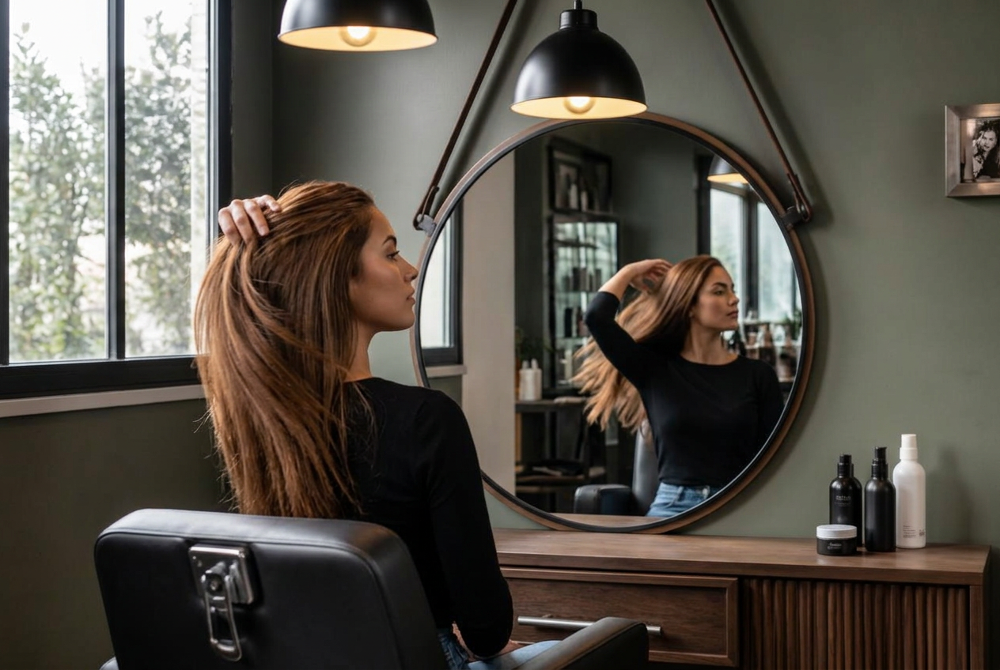
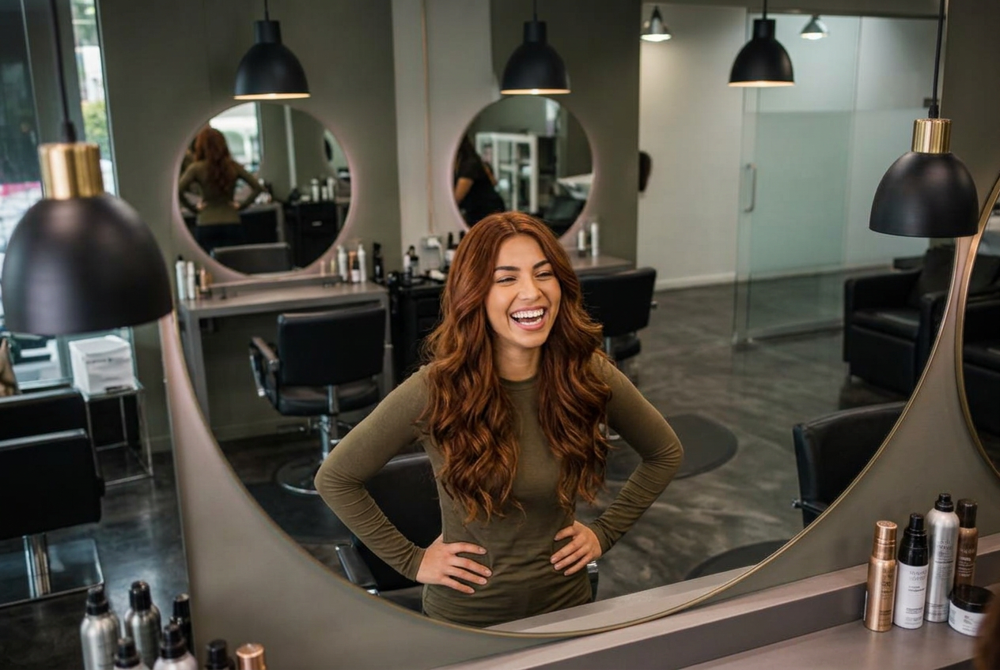
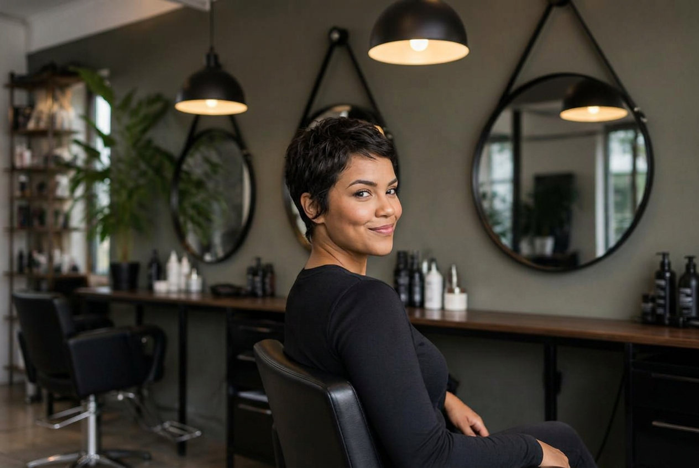
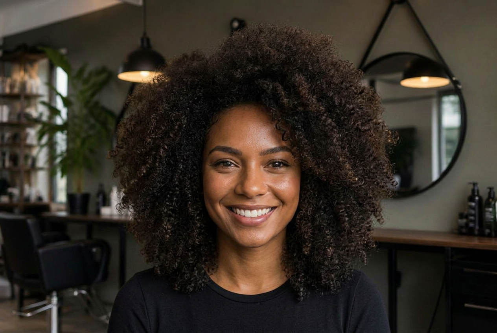

Com o cuidado de cada fio, vamos deixar seu cabelo bem liso fazendo o diagnóstico, higienização com shampoo adequado, aplicação do tratamento principal (como hidratação, reconstrução ou alisamento), selagem de cutículas, enxágue e finalização profissional com proteção térmica.

Vamos cuidar dessas ondas para ficarem perfeitas?! para garantir definição, nutrição e controle do frizz sem pesar os fios. As fases principais são limpeza suave, reposição de nutrientes com máscaras profissionais, aplicação de leave-in com proteção térmica e finalização técnica para ativar as ondas.

Para as nossas Cacheadas temos um tratamento que envolve: higienização com shampoo adequado, acidificação para equilibrar o pH e fechar as cutículas, tratamento intensivo de hidratação ou nutrição, enxágue, e uma finalização profissional com técnicas de fitagem ou uso de difusor.

Cabelo curto e com estilo? aqui você tem que tal fazer diagnóstico do fio e couro cabeludo, higienização com shampoo adequado, aplicação do princípio ativo (hidratação, nutrição ou reconstrução), tempo de pausa sob vapor ou touca, enxágue com selagem de cutículas, e finalização com protetor térmico e modelagem.

Querendo impressionar todos com seu cabelo? aqui nós realizamos seu desejo aqui seu cabelo ganha uma avaliação personalizada, lavagem com shampoo hidratante, tratamento profundo (hidratação, nutrição ou reconstrução), corte a seco para valorizar o formato natural e finalização estruturada para definição dos cachos.